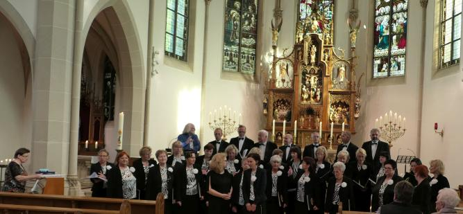
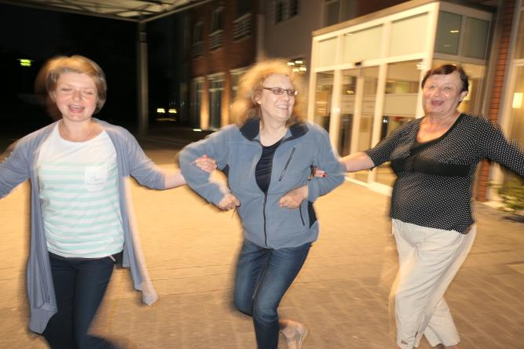
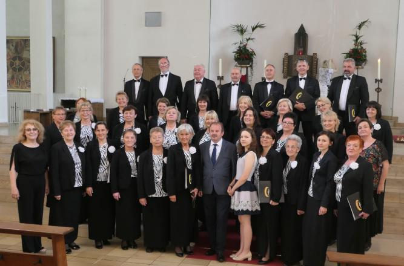

A tymczasem w Cameracie...
.
2019-06-13 do 2019-06-17
Chór pod dyrekcją Izabeli Szoty uczestniczył w Jubileuszu 50-lecia działalności Die Musikschule der Stadt Bergkamen, stąd podczas uroczystości nie mogło zabraknąć przedstawicieli Zespołu Szkół Muzycznych w Wieliczce. Były to Pani Agnieszka Korczyńska, akompaniująca solistce i chórowi oraz uczennica Jadwiga Korab Chrzanowska.
A oto jak było podczas wyjazdu:
Wyjeżdżamy z Wieliczki nocą. No cóż mamy przed sobą 1040 km jak podaje Adaś a on wie najlepiej. Jedziemy 14 godzin!!! W czasie jazdy oczywiście… gitara i śpiew. Najtrwalsi „zawodnicy” wytrzymali do 3 rano. Jesteśmy na miejscu o 11.00. Zaraz obiad i zakwaterowanie w hotelu. Po tak długiej podróży mamy wolne. Można spać, spacerować, lub co kto chce! Myślę, że większość „walnęła” się spać, bo jakoś cicho w hotelu. Chyba, że nie mają siły rozrabiać.
Rano po pysznym śniadaniu spotkanie w Westfalskim Centrum Sportów Wodnych (Marina-Hafen).

Koncert bardzo się podobał. Jeszcze prezentacja solistów i akompaniatorki oraz ukłon.
Kolacja i wracamy do hotelu. Jesteśmy trochę zmęczeni, ale zadowoleni. I oto…wszyscy w komplecie stawili się na wieczornym piwie (Deutsches Bier ist sehr lecker) oraz chóralnym śpiewie

Urząd Miasta i Gminy Wieliczka reprezentował Radny - Pan Ludwik Gawor, który również uczestniczył czynnie w naszym spotkaniu.
Ale byli też tacy… mówią, że oni nie „tancjory” … (niestety cyrlicy nie mam, więc musi tak być).
Impreza skończyła się o północy. Rano trzeba wstać.
Wyjeżdżamy do kościoła św. Elżbiety. Oprawiamy muzycznie mszę św. w tym kościele. Najpierw krótka rozśpiewka z widownią, która nam kibicuje :)

Teraz jedziemy na koncert do "Studio Theater" w Bergkamen.W oczekiwaniu na koncert.
Wracamy do domu. Tak było całą drogę.

© Stowarzyszenie Muzyczne Chór Camerata Wieliczka
Projekt i wykonanie:  Prowadzenie strony oraz zdjęcia: Małgorzata Wysocka-Cebula
Prowadzenie strony oraz zdjęcia: Małgorzata Wysocka-Cebula